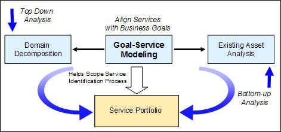

| Artifact: Goal Service Model (ART 0581) |
 |
|
The Goal-Service Model work product provides value in several areas by:
Goal-Service modeling analyzes and documents high level business goals and sub-goals, along with related Key Performance Indicators (KPIs) and metrics, in order to identify and validate candidate services proposed for use in an SOA based solution. This approach provides traceability from a service back to goals of an enterprise, an important criterion for determining the suitability of a candidate service. The Goal-Service Model work product captures the results of Goal-Service Modeling, one of three major techniques used during Service-Oriented Modeling and Architecture (SOMA) identification activities. By clarifying business goals related to the SOA based initiative, Goal-Service Modeling provides scoping criteria for the other two SOMA identification activities.  |
| Roles | Responsible: | Modified By: |
|---|---|---|
| Tasks | Input To: | Output From: |
| Main Description | The Goal-Service Model work product captures the following information:
Business goals describe specific things that are important for the business to achieve. High level goals can be decomposed into sub-goals that become increasingly narrower in scope and definition.
Once an enterprise has analyzed its mission and defined its goals, it needs a way to measure progress toward those
goals. Key Performance Indicators (KPIs), also known as Key Success Indicators (KSIs) or Key Business Indicators
(KBIs), are used by businesses to define and measure progress toward their goals. In SOMA, KPIs represent quantifiable
objectives, agreed to when the goal is established, that reflect the critical success factors of an organization. |
|---|---|
| Brief Outline | Goals and sub-goals form a hierarchy that can be represented in a tabiular format. |
| Notation | The Goal Service Model artifact takes the form of a matrix with a hierarchy of numbered goals in rows and the following
columns:
Goal: Organizations define goals to meet their mission and to set strategic direction. In SOMA, the term goal denotes a business aspiration starting at a high level. For example a high level goal could be to increase revenue. This goal can be decomposed into sub-goals such as “increase revenue from <x>”, and “increase revenue from <y>”. Key Performance Indicator (KPI): KPIs are used to determine how well a business is meeting its goals, or to assess the level of performance of business processes. For example, for the goal “increase revenue”, a specific KPI could be “increase revenue by 5% during the next fiscal year”. This provides a specific way to determine if the goal has been met. Metrics: Metrics identify the type of measurements that need to be collected to assess the state of the KPIs. For a KPI such as “increase revenue by 5% during the next fiscal year”, a metric could be “record the revenue from all revenue generating transactions”. Measurements would then need to be taken of each relevant transaction, across all systems that support those transactions. An implication of this is that all of the individual measurements dictated by the metric would need to be aggregated and reported in a meaningful way so that it can be determined if the related KPI has been met.
Service: a (candidate) service that can be used to meet the goal or sub-goal. This
reflects a mapping between goals (or sub-goals) and services in the service portfolio of the Service Model work
product. Initially the service mapping will be based on candidate services. Later as specific service exposure
decisions are made, candidate services can become services chosen for exposure. Service exposure decisions are
recorded in the Service Model work product. |
| Templates | |
|---|---|
| Examples |
This information is typically completed to two levels of elaboration. The first elaboration should be as complete as possible in terms of identifying goals, sub-goals, KPIs and metrics. The mapping of goals and sub-goals to services should be made as complete as feasible at this point in the process, but the validation and completion of this mapping is actually finalized during SOMA Service Exposure Decisions, resulting in the second elaboration of this work product. Each goal and sub-goal should have a KPI and Metric associated with it. Although an objective of Goal-Service Modeling is to map goals to services, high level goals may not map directly to a service – sub-goals tend to map more obviously to services. When a service maps explicitly to a sub-goal it is also mapping implicitly to a higher level goal. A single instance of the Goal-Service Model should be created to cover all business domain within the scope of the project. Given that subject matter experts may be experts in a specific business domain, an iterative approach can be used to focus on one domain at a time to make interviews or work sessions more efficient. During Goal-Service Modeling interview or work sessions, consider the knowledge areas that the subject matter experts can speak to. For example, it may be possible to capture some initial statements of non-functional requirements in parallel with this task. This can provide valuable input into other more detailed requirements gathering sessions. |
| Impact of not having | Failure to clearly define business goals will make it difficult to determine if proposed candidate services are business-aligned and appropriate for use in an SOA based initiative. Since Goal-Service Modeling can also identify (not simply validate) candidate services, failure to create this work product could lead to gaps in the service portfolio. These factors could result in additional effort and cost due to the creation of unnecessary services, or reduced success of the SOA based solution due to gaps in the service portfolio. Since the Goal-Service Model is important to defining the scope of other service identification activities, failure to create it could result in unnecessary effort being spent in other activities, or gaps in the output from those activities. |
|---|---|
| Reasons for not needing | Although the Goal-Service Model is considered important, if not essential, for a majority of SOA based initiatives, there could be occasional circumstances where the focus is narrowed to the creation of services for common technology functions which may not appear to be easily aligned with specific business goals. It is worth considering that even in these scenarios the Goal-Service Model can be used to document goals related to the “Business of IT”. |
| Checklists | |
|---|---|
| Tool Mentors | |
| Estimation Considerations |
| © Copyright IBM Corp. 1987, 2012 All Rights Reserved Property of IBM These materials are intended only for use as part of an IBM engagement |